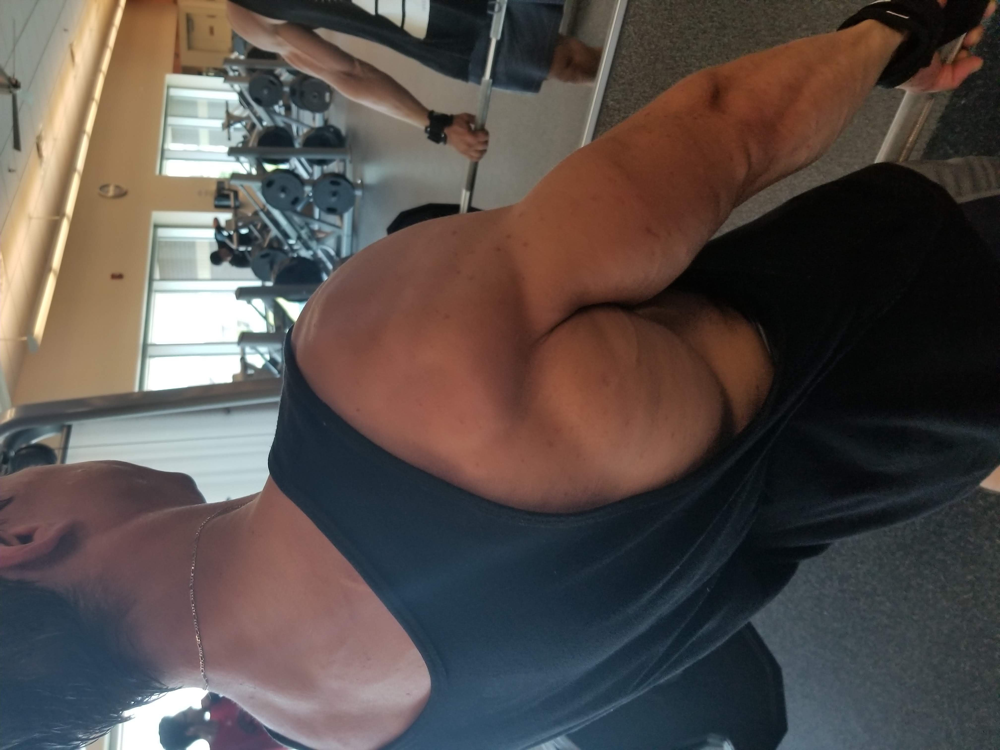

The Road to Recovery: Handling Injuries Physically and Mentally
By | June 6th, 2023
Introduction:
Experiencing an injury can be a formidable setback, especially for those who are motivated and constantly on the path to achieving their goals. It can often feel like a roadblock standing between you and your aspirations. However, it's crucial to remember that healing is an integral part of progress, and in truth, injuries can serve as stepping stones rather than obstacles. This article will guide you on how to handle injuries, both physically and mentally, emphasizing the importance of a positive attitude throughout the recovery journey.

- Understanding your Injury
- Physical Rehabilitation
- Identifying and Addressing Vulnerabilities
- Mental Well-being
- Continuity in Healthy Living
Every journey to recovery begins with understanding your injury. Research your specific ailment, consult with healthcare professionals, and learn about its implications on your body. Awareness is the first step towards recovery. There are numerous resources available online, including articles, tutorials, and forums where people share their experiences and advice about dealing with similar injuries.
Once you've understood your injury, the next step is to explore the exercises and stretches that can help speed up your recovery. Rehabilitation exercises are an essential part of healing, aiding in restoring strength and flexibility. It's also vital to maintain a healthy diet rich in proteins, vitamins, and minerals, which contribute to tissue repair and overall body recovery.
Here lies a common pitfall: many people arm themselves with knowledge and know precisely what needs to be done, yet they fail to put it into action. Understanding your injury and its rehabilitation is half the battle, the other half is the practical implementation of this knowledge. Dedicate time each day, ideally twice if possible, to perform the recommended exercises and stretches. Remember, healing, like health improvement, is not a passive process - it requires active participation. Commitment to regular physical rehabilitation is a proactive step towards healing, mirroring the principle that progress only comes when you do the work. So, put in the effort and witness the transformation in your journey towards recovery.
Sometimes injuries can indicate vulnerabilities in our form or technique, especially when it comes to exercise or sports-related injuries. Take this as an opportunity to revisit your techniques, make necessary adjustments, and strengthen your form. This will not only aid your current recovery but also help prevent future injuries.
An injury affects more than just the physical body - it impacts our mental health as well, especially when you love to move and play. Maintaining a positive mental attitude is paramount during recovery. Practice mindfulness, engage in activities that bring you joy, and surround yourself with a supportive network. Remember, a healthy mind leads to a faster and more efficient healing process.
Injuries should not halt your pursuit of a healthy lifestyle. Modify your workouts, focus on nutrition, and ensure you get adequate sleep. There are always ways to continue with healthy living while respecting your body's healing process.
Conclusion:
Injuries can indeed be challenging, but they're not insurmountable. With the right understanding, physical rehabilitation, mental fortitude, and continuity in healthy living, you can turn your injury from a roadblock into a stepping stone towards your goals. Remember, your body's capacity to heal is phenomenal, and with the right attitude and tools, you'll be back on your path to health and wellness in no time. The journey to recovery is just another step in reaching your goals. Embrace it, and let it propel you further on your path to achieving your aspirations.